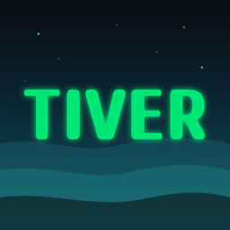

데일리 스트림
하루가 수평 축으로 흘러요. 현재(NOW)를 가운데 두고 지난 기록과 다음 흐름을 힐끗 봐요.

TIVER시간을 격자에 가두지 않고 수평으로 흐르는 스트림에 올려요. 늦어지면 뒤 일정을 밀고, 놓칠 수 없는 약속은 앞을 압축해서 지켜요.
지금 Phase 1 (Core MVP) 을 만들고 있어요
늦게 일어난 아침이에요. NOW 가 07:30 인데 10:00 팀 미팅은 옮길 수 없어요. 매직 존이 앞 드롭을 같은 비율로 줄여 앵커를 지켜요.
TIVER 는 하루를 강물처럼 봐요. 흐름 위에 조각을 올리고, 움직이지 않는 축을 세우고, 변수가 생기면 다시 계산해요.
하루가 수평 축으로 흘러요. 현재(NOW)를 가운데 두고 지난 기록과 다음 흐름을 힐끗 봐요.
스트림 위에 툭 올리는 실행 단위예요. 시작 시각, 지속시간, 체크리스트를 가져요.
미팅, 출근처럼 옮길 수 없는 고정 마일스톤이에요. 흐름이 흔들려도 자리를 지켜요.
변수가 생기면 앵커를 지키도록 앞 일정을 다시 계산해요. Phase 1 은 규칙 기반 압축이고, 맥락을 읽는 AI 는 Phase 2 에 넣어요.
출시한 것, 만드는 중인 것, 준비 중인 것을 그대로 적어요. 아직 없는 걸 있다고 쓰지 않아요.
먼저 스트림과 시간 엔진을 세우고, 그다음 AI 와 수익 모델, 마지막에 게이미피케이션과 생태계를 열어요.
회의, 마감, 이동이 뒤섞인 하루를 보내요
수평 스트림과 NOW 센터링으로 하루 전체 맥락을 바로 잡아요.
운동, 공부 같은 루틴을 꾸준히 이어가고 싶어요
템플릿 임포트로 검증된 루틴을 내 스트림에 붙여요. Phase 3 에 열어요.
프로젝트 단위 일정과 고정 마일스톤이 중요해요
타임 매직이 앵커에서 거꾸로 계산해 실행 계획을 세워요. AI 역산은 Phase 2 예요.
전문가의 효율적인 스케줄을 따라 해 보고 싶어요
마켓플레이스에서 전문가의 타임라인을 구독해 내 하루에 스트리밍해요. Phase 3 에 열어요.